Wiązanie jest to oddziaływanie między dwoma (lub więcej) atomami. Szczególnym przykładem wiązania jest wiązanie chemiczne; to oddziaływania między dwoma atomami (w bardzo wyjątkowych wypadkach więcej) na skutek nakładania się ich orbitali atomowych i uwspólniania elektronów. Rodzaje wiązań chemicznym możemy podzielić wedle trzech kryteriów: polaryzacji, pochodzenia elektronów i kształtu wiązania. Dość ciekawą analogią umożliwiającą zrozumienie podziału wiązań jest piwo, ludzie jak się lubią uwspólniają piwo, a atomy elektrony.
Podział ten odpowiada na pytanie w stronę którego atomu, bliżej którego atomu przesunięte są elektrony. Jak ustaliliśmy wcześniej, atomy spotykają się na elektrony, a ludzie na piwo. Ludzie jedni lubią piwo bardziej, innymi mniej, mówi o tym piwolubność (albo alkoholizm), i analogicznie jedne atomy lubią jedne elektrony bardziej niż inne, o czym mówi elektroujemność. W tym wypadku mamy trzy możliwości:
Kowalencyjne – oba atomy lubią elektrony tak samo, albo porównywalnie – wówczas elektrony sa pomiędzy nimi (dokładnie). Jest sytuacja analogiczna spotkania się dwóch osób, które lubią piwo tak samo, wówczas z zakupionego dzbana piwa każda z osób wypije tyle samo. Różnica elektroujemności między atomami jest mniejsza równa 0.4. Wiązanie to oznaczamy zwykłą linią prostą. Oczywiście elektrony zostały uwspólnione czyli obsługują oba atomy.
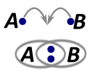
Kowalencyjne spolaryzowane - oba atomy lubią elektrony, są podobnie elektroujemne, ale jeden bardziej a drugi mniej, różnica elektroujemności jest w zakresie \(0.4 \leq \mathrm{\Delta}E < 1.7\) . Wiązanie, a więc i elektrony użyte do tworzenia tego wiązania są przesunięte w stronę tego bardziej elektroujemnego atomu. Stosując analogię z piwem, jest to przypadek, w którym spotkała się osoba, która bardzo lubi piwo z osobą, która spróbuje dla smaku. Jest oczywistym, że ta osoba, która bardzo lubi wypije znacznie więcej piwa niż ta, która spróbuje. Ale osoba próbująca dalej również spożywa, a więc nie można powiedzieć, że całe piwo wypiła jedna osoba. Wiązanie to oznaczamy kreską z grotem skierowanym w kierunku bardziej elektroujemnego atomu, lub klinem pogrubionym w stronę bardziej elektroujemnego pierwiastka. Oczywiście elektrony położone są pomiędzy atomami. Na przedstawionym rysunku B jest bardziej elektroujemny niż A.
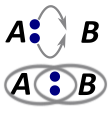
Jonowe – jeden lubi, ten bardziej elektroujemny, a drugi praktycznie nie lubi, więc drugi oddaje elektron pierwszemu. Występuje ono wtedy, gdy różnica elektroujemności między tworzącymi to wiązanie atomami jest większa równa 1.7. Atom oddający elektron staje się kationem, a przyjmujący staje się anionem. Należy podkreślić, iż wiązanie jonowe nie jest wiązaniem chemicznym tylko oddziaływaniem jonowym, polegającym na przyciąganiu się fragmentu dodatniego i ujemnego . Można to porównać do pójścia do klubu osoby pijącej z osobą niepijącą. Jeżeli w cenie biletu jest piwo, jest oczywistym, że osoba nielubiąca piwa odda swoje przydziałowe piwo osobie pijącej, więcej taka osoba pijąca się bardzo ucieszy.
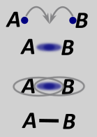
Jeżeli dwie osoby spotykają się na piwo ktoś musi to piwo kupić. Zwykle są dwa rozwiązania tego problemu – albo takie osoby płacą pół na pół albo jedna stawia, a druga daje tylko gębę do picia.
Wśród atomów jest to samo, tzn. możemy mieć układ, w którym jeden elektron tworzący wiązanie pochodzi od jednego atomu, a drugi od drugiego. Jest wiązanie typu prostego (można powiedzieć, że kowalencyjne, ale to nie jest do końca prawda, wynika z niedokładności polskiego systemu)
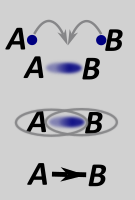
Możemy mieć też układ, że jeden atom daje parę elektronów, a drugi tylko mordę do elektronów (przyjmuje je). Takie wiązanie nazywamy wiązaniem koordynacyjnym.
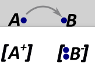
Oczywiście w obu przypadkach oba elektrony tworzące wiązanie są uwspólnione tzn. obsługują oba atomy. Wiązania chemiczne obu rodzajów są nierozróżnialne, jeżeli chodzi o pochodzenie elektronów tzn. nieważne czy porównujemy wiązania proste czy koordynacyjne, długości wiązań i inne parametry wiązań są takie same. Można to porównać do sytuacji, gdy widzisz dwie osoby przy piwie w barze. Jest piwo (elektrony) na stole, wiadomo, że piją razem – czyli tworzą wiązanie, ale skąd to piwo (elektrony) się wzięło to tego nie widać.
Wiązanie typu sigma – pierwsze tworzące się wiązanie, elektrony znajdują się dokładnie w linii pomiędzy atomami
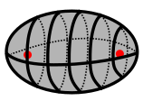
Wiązanie to może się zrobić na skutek nałożenia praktycznie dowolnych orbitali (s, p, d, zhybryzowane...)
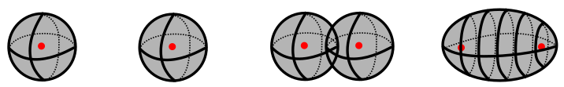
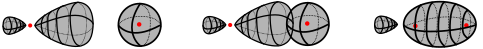
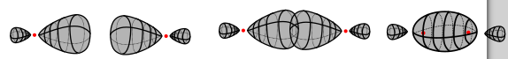
Wiazania typu pi są to maksymalne dwa wiązanie, które się tworzą pomiędzy dwoma atomami, oczywiście kolejne po zrobieniu wiązań typu sigma. Elektrony w wiązaniach pi rozmieszczone są (nad i pod) lub (przed i za) atomami, zależnie od tego, które orbitale nałożyliśmy. Możemy to przedtawić na rysunku: Orbital żółty stanowi jedno całe wiązanie pi, a niebieski drugie całe wiązanie pi:
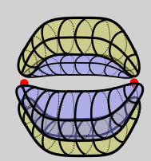
Wiązanie typu pi może się zrobić na skutek nałożenia się bocznego (czyli bokiem, nie przodem) orbitali typu p lub p+d lub d+d , przyczym symetria musi być zachowana .
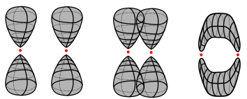
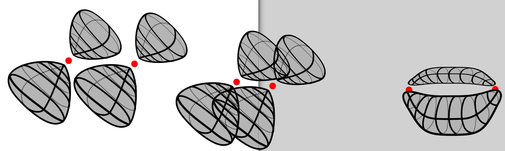
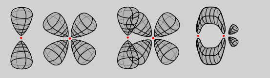
Aby powstało wiązanie pi, orbitale p, które nakładamy muszą mieć podobną wielkość.
W praktyce znaczy to tyle, że wiązania pi mogą tworzyć atomy o podobych wielkościach, a więc leżące w jednym okresie (lub czasem w sąsiednich okresach).
Wiązania pi są zawsze słabsze niż wiązania sigma, bo w sumie łatwiej się dobrać do tych elektronów, które sterczą nad i pod zamiast dokładnie pomiędzy atomami. Oczywiście całkowicie wiązanie podwójne będzie silniejsze niż pojedyncze, gdyż podwójne składa się z jednego wiązania sigma i jednego wiązania pi, a wiązanie pojedyncze składa się z tylko z jednego wiązania sigma. Analogicznie potrójne (dwa pi i jedno sigma) jest silniejsze niż podwójne (jedno pi i jedno sigma)
Im bardziej kogoś lubimy tym bliżej niego chcemy być. Analogicznie jest z atomami, im bardziej się lubią, im większa krotność – a więc tym bliżej chcą być, więc tym mniejsza jest odległość wiązania.
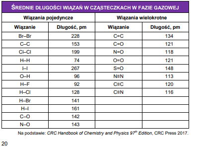
Porównując długości wiązań pojedynczego, podwójnego i potrójnego, widzimy, że najkrótsze i tym samym najmocniejsze jest potrójne (120nm) potem podwójne (134nm) a dopiero potem. pojedyncze (153nm).